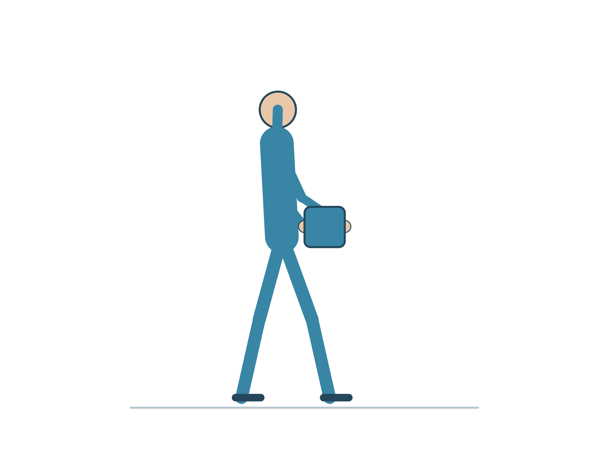
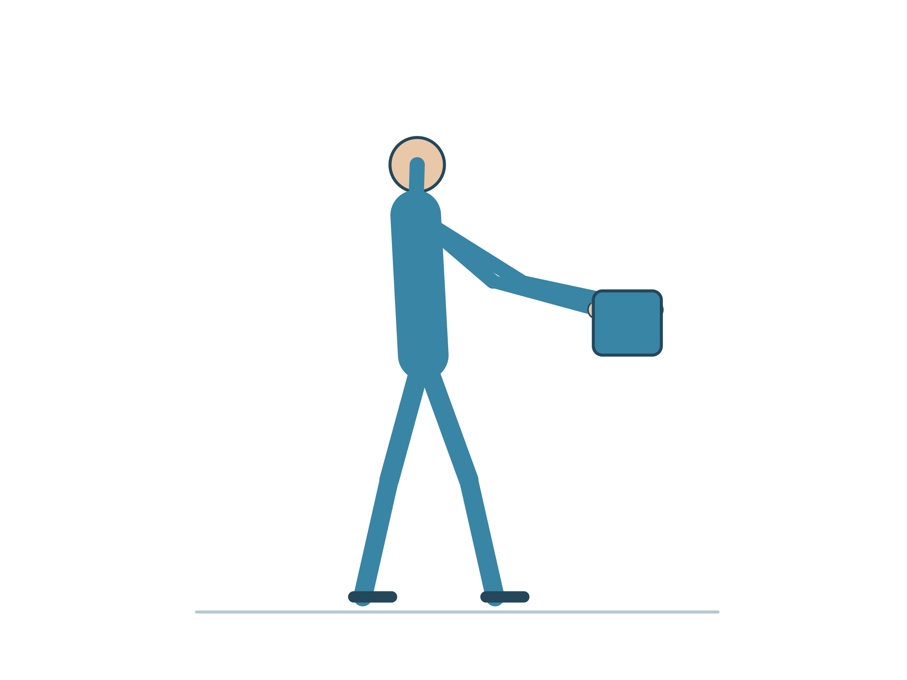
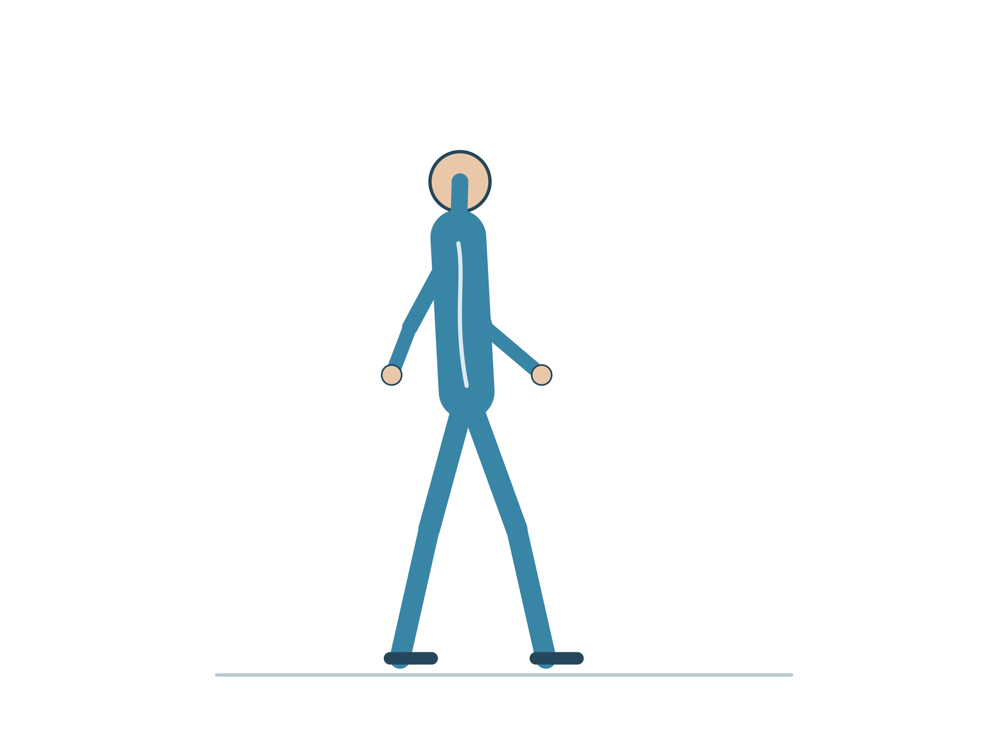
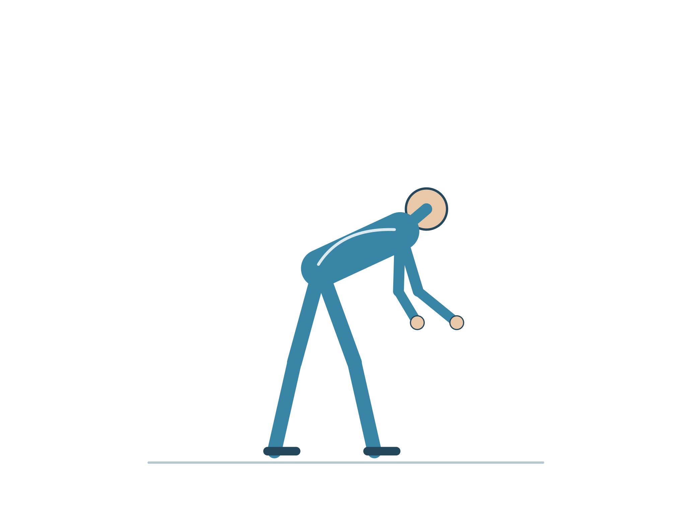

Brochures INRS utiles
ED 6518
Prévention des TMS : une démarche en étapes
ED 6094
Vous avez dit TMS ?
ED 6161
Méthode d’analyse de la charge physique de travail
ED 6087
Travail et lombalgie
ED 6387
Les TMS, tous concernés (dépliant)
ED 6040
Mal au dos. Osez bouger pour vous soigner (dépliant)
ED 4701
Aide et soins à la personne : catalogue des productions INRS
Autres publications et affiches (dont la série TMS) : INRS — TMS, publications, outils, liens ↗ · INRS — activité physique, publications ↗
Outils de la plateforme
Mémo-débat : « le bon geste » existe-t-il ?
Pendant des années, on a enseigné des gestes et postures « universels » : dos droit, genoux fléchis. La démarche de prévention actuelle (PRAP, INRS) déplace la question : ce qui protège, c’est d’abord d’analyser la situation et de la transformer. Cet encadré sert de point de départ à un échange de 10 minutes.
Ce qu’on a longtemps enseigné
- Une posture « correcte » valable en toutes circonstances.
- La responsabilité du geste repose sur la personne.
- Apprendre à « bien faire » devrait suffire.
Ce que retient la démarche de prévention
- On analyse d’abord : personne, appuis, environnement, matériel, renfort.
- On réduit la contrainte à la source : hauteur du lit, espace, aides techniques, organisation.
- La technique reste utile, mais elle s’adapte à la situation. À elle seule, elle ne suffit pas (les études sur l’apprentissage d’une technique de manutention seule ne montrent pas de réduction nette des lombalgies).
Quelques repères en images (à discuter, pas des règles)




Quatre pièges de raisonnement à repérer
- Biais d’attribution : on explique un incident par le geste de la personne plutôt que par la situation.
- Biais rétrospectif : après coup, « il suffisait de… » paraît évident ; sur le moment, ça ne l’était pas.
- Normalisation : « on a toujours fait comme ça » rend invisible une contrainte pourtant réelle.
- Illusion de contrôle : se croire protégé par une ceinture ou par « la bonne technique ».
Pour échanger (en binômes, puis restitution)
- Quel geste « enseigné » ne tient plus dès que le lit est trop bas, la chambre encombrée ou la personne imprévisible ?
- Après un incident, cherche-t-on d’abord l’erreur de la personne, ou ce qui, dans la situation, l’a rendue probable ?
- Quelle contrainte vous semble « normale » seulement parce qu’elle existe depuis toujours ?
- Si l’on retire la règle « dos droit », que garde-t-on (appuis, rapprochement, fluidité) et qu’ajoute-t-on (analyse, aide technique, renfort) ?
- Qu’est-ce que vous pouvez changer seul(e) demain matin, et qu’est-ce qui relève de l’organisation ?